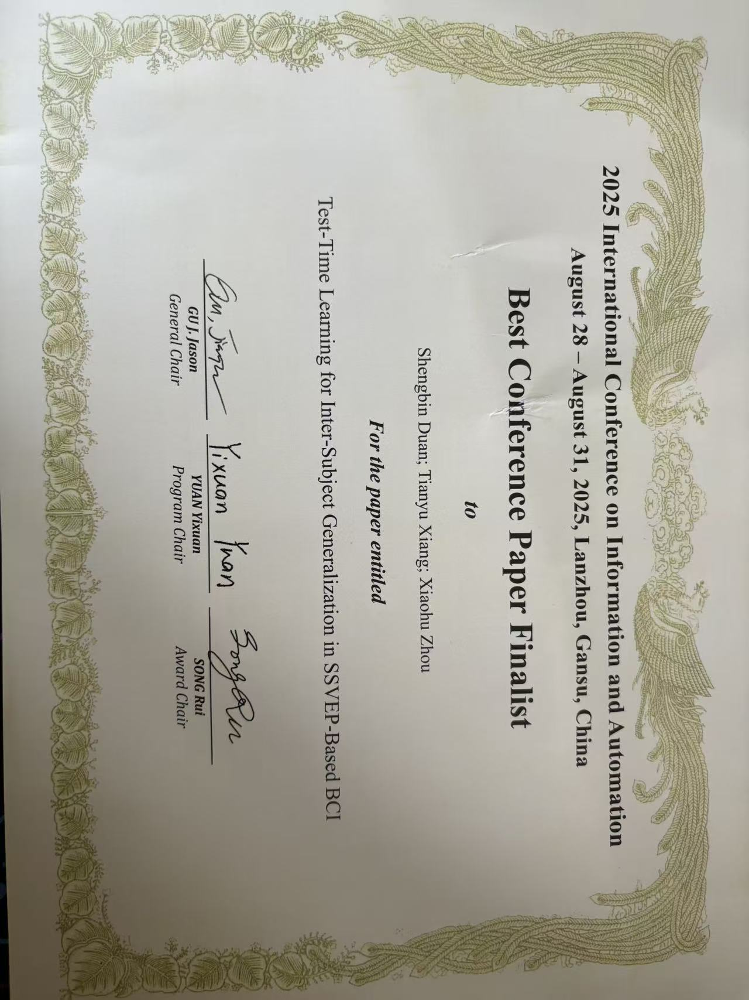
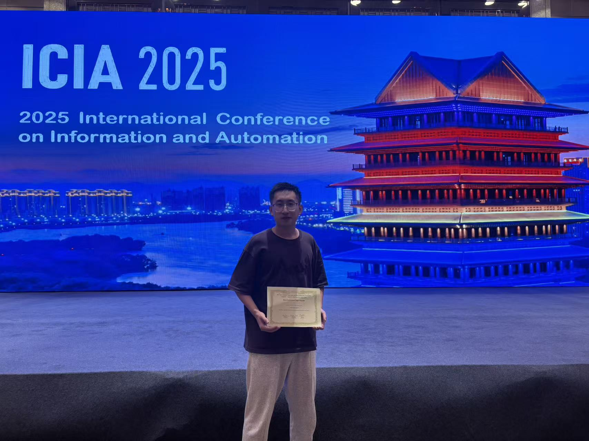
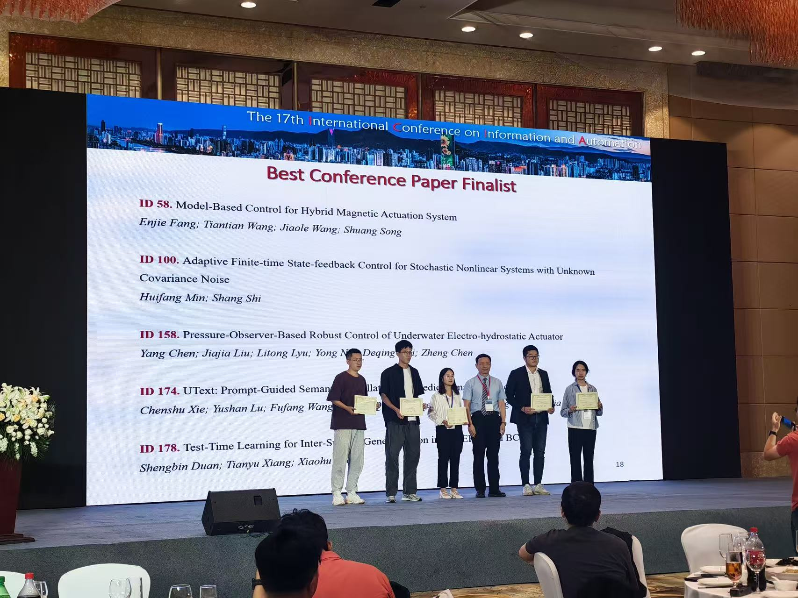

About Me
硕士研究生（山西财经大学 / 中国科学院大学 联合培养），研究方向涵盖：脑机接口（SSVEP、运动想象、在线学习、脑电大模型）、时间序列分析、跨模态智能与机器人控制。 研究兴趣包括脑机接口、人机交互、跨模态与多源信号融合（脑电等）以及在康复、娱乐等场景的应用探索。希望在博士阶段进一步深入人机交互 × 脑机接口 × 智能机器人系统的交叉研究。Research-oriented
基本信息：1999 年生，籍贯山西，现居北京昌平区。联系方式：shengbinduan666@gmail.com；微信：155-3446-6654。个人主页 / GitHub：shengbinduan.github.io。
Education
-
硕士研究生（计算机应用技术）· 信息学院，山西财经大学2023.09 – 至今
-
联合培养硕士研究生· 中国科学院大学（自动化所 HEART 组/侯增广团队）2024.06 – 至今
-
学士（计算机科学与技术）· 晋中学院2018.09 – 2022.07
指导老师：郝剑龙老师（机器学习金融组）；联合培养合作：周小虎老师 HEART 组 / 侯增广老师团队。
At a Glance
- 📚 3+ 篇论文（含 IEEE T-PAMI 审稿中、ICIA 2025、ICONIP 2024）。
- 🤝 BCI × VLA 共享控制、在线学习（TTA/TTT）、多方法融合增强。
- 🏆 申昊杯研究生机器人创新大赛 一等奖；FLAME Technical Challenge Runners-Up；世界机器人大赛（BCI）三等奖。
Publications
- Online Adaptation via Dual-Stage Alignment and Self-Supervision for Fast-Calibration BCI — under review at IEEE T-PAMI. [arXiv] Online BCI Dual-Stage Alignment
- Test-Time Learning for Inter-Subject Generalization in SSVEP-Based BCI, ICIA 2025 — Best Paper Finalist. SSVEP TTL/TTA
- Transformer-Based Long Time Series Forecasting with Decoupled Information Extraction and Complementarity, ICONIP 2024（CCF-C，已发表）。 Time Series
- Learning Novel Skills from Language-Generated Demonstrations, ICLR 2025. (submission) VLA Robotics
- Parallels Between VLA Model Post-Training and Human Motor Learning: Progress, Challenges, and Trends, under review at IEEE TAI. Robotics Learning
Projects
-
在线非侵入式脑机接口与人机共享控制系统（2024 – 至今）
- 独立搭建 Online SSVEP & Motor-Imagery 系统（频段 8–15 Hz），并融合运动想象范式以提升自由度。
- 将 BCI 接口集成进 VLA（RT-1） 模型实现共享控制，完成六自由度机械臂高效控制。
- 协同策略：VLA 负责多步任务规划，BCI 在关键节点介入决策，显著增强响应效率与稳定性。
-
IEEE CIS FLAME Technical Challenge 2024（2024.12）
A Robotics Skills Learning Framework from Natural Language to Manipulation Skills — Runners-Up Award $1,000
-
2025 世界机器人大赛 — BCI 脑控机器人（2025.07）
三等奖 · 赛项：基于非侵入式脑机接口的运动康复训练技术与系统 · 担任队长，主导解码平台与模型、多方法增强与融合。
-
申昊杯研究生机器人创新大赛 2024（2024.11）
一等奖 · 课题：从自然语言到机器人操作技能 · 负责关键实验/数据/训练与材料撰写。
Highlights
- BCI × VLA 共享控制，面向康复与人机协作场景。
- 在线学习（TTA/TTT）、跨被试泛化、少/零校准。
- 多模型融合与数据增强 pipeline，稳定迭代刷榜。
工程实践：EEG 采集与在线处理、机械臂控制（仿真+实物）与 VLA/RT-1 集成；跨学科协作与科研写作。
Skills
编程与平台
- Python、Matlab；Numpy / SciPy / scikit-learn / MNE / EEGLAB / Matplotlib。
- 深度学习：PyTorch、TensorFlow。
- 系统：Windows / Linux / WSL。
研究兴趣
- BCI（SSVEP / Motor Imagery）、在线学习（Online-Learning / TTA / TTT）。
- 时间序列建模、跨模态智能、机器人。
其他
- 合作与表达：跨学科协作、Poster/Oral/答辩/项目书写作。
- 英语：已通过四级，备考雅思 ing…；兴趣：骑车/音乐/篮球/健身。
Gallery
一些进展：



Contact
Email： shengbinduan666@gmail.com
GitHub： github.com/ShengbinDuan
Location： 北京市 · 昌平区（可长期科研/竞赛合作）
Open to Research Collaboration